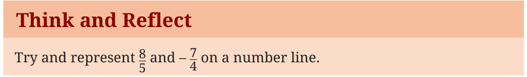

We already know that integers can be represented on a number line. To do this, we first choose a point and mark it as 0, called the origin. Moving one unit to the right gives the point representing 1, two units to the right gives 2, and so on. Similarly, moving one unit to the left of the origin gives \(-1\), two units to the left gives \(-2\), and so on. Each integer lies at an equal distance from the next one. This is represented in Fig. 3.3.
Fig. 3.3
Rational numbers can also be represented on the number line. Unlike integers, they may lie between two integers. For example, \(\frac{1}{2}\) lies exactly halfway between 0 and 1, and \(-\frac{3}{4}\) lies between \(-1\) and 0 as shown in Fig. 3.4.
Fig. 3.4
To represent a rational number \(\frac{p}{q}\), \(q \ne 0\), on the number line, divide the unit interval (the distance between two consecutive integers) into \(q\) equal parts. Then move \(p\) parts from 0 to the right if the number is positive, and to the left if it is negative.
For example, to represent \(\frac{3}{4}\), divide the interval between 0 and 1 into four equal parts and move three parts to the right from 0.
Fig. 3.5
Even fractions greater than 1 can be located on the number line in this way. For example, \(\frac{9}{4} = 2\frac{1}{4}\) so it lies between 2 and 3. We divide the interval between 2 and 3 into four equal parts and move one part to the right of 2. See Fig. 3.6.

Think and Reflect
Try and represent \(\frac{8}{5}\) and \(-\frac{7}{4}\) on a number line.
Fig. 3.7: Some integers and rational numbers on a number line
Absolute value of a rational number
The absolute value of a rational number \(x\), written as \(|x|\), represents its distance from 0 on the number line.
Example 1: \(\left|\frac{5}{3}\right| = \frac{5}{3}\), \(\left|-\frac{5}{3}\right|\) is also equal to \(\frac{5}{3}\) and \(|0| = 0\).
Thus, the absolute value of a positive number is the number itself. The absolute value of a negative number is its positive value. Therefore, the absolute value of any rational number is always non-negative, that is, \(|x| \ge 0\).
For two rational numbers \(a\) and \(b\), the distance between them on the number line is given by \(|a - b|\). Fig. 3.8 represents the distance between the integers \(-4\) and 3.

3.4.2 The Density of Rational Numbers
One of the most magical properties of rational numbers is that they are dense. Between any two integers, say 1 and 2, there is a rational number \(\frac{3}{2}\). Between 1 and \(\frac{3}{2}\), there is another rational number \(\frac{5}{4}\). No matter how close two rational numbers are on the number line, you can always find another rational number between them by taking their average. For example, a rational number between 1 and \(\frac{3}{2}\) can be found by taking their average: \(\frac{1 + \frac{3}{2}}{2} = \frac{5}{4}\). Try to explain why the average of two rational numbers \(a\) and \(b\), which equals \(\frac{a + b}{2}\), is always a rational number between \(a\) and \(b\).
Fig. 3.9
This means that there are infinitely many rational numbers between any two points. It feels as though the rational numbers must completely fill the number line, leaving no gaps whatsoever. But do they?